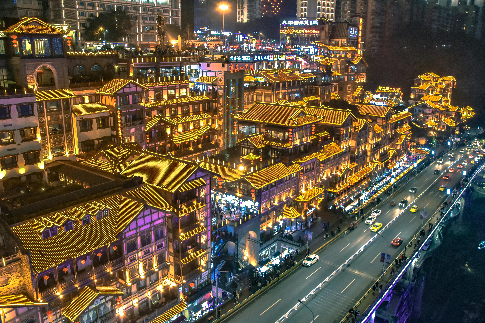
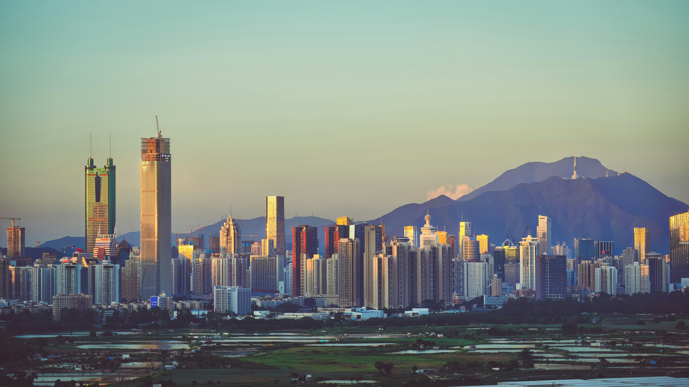

First Impressions of China: A Journey Beyond Expectations
I always imagined China as a mix of ancient temples and huge futuristic cities — but seeing it in real life is something completely different. Everything feels bigger, louder, and more alive than I expected. The scale of the cities, the way tradition and modern life exist right next to each other, and the constant movement of people create an atmosphere that’s impossible to describe until you’re standing in the middle of it.
What surprised me most was how quickly I started noticing small details: the sound of bicycles at sunrise, the smell of street food drifting through narrow alleys, the way old men gather to play cards under a tree, and the feeling of being surrounded by history even when you’re inside a modern metro station. China isn’t just a place you visit — it’s a place that pulls you in and makes you curious about everything.
This blog is where I’m collecting those little moments, thoughts, and things I learned while exploring this incredible country. It’s not a perfect guide, just my personal journey — the places that amazed me, the food I tried, the people I met, and the things I didn’t expect at all. If you’ve ever wondered what traveling through China really feels like, maybe you’ll find a bit of that here.


Looking Back on the Journey
Traveling through China taught me that no matter how much you read beforehand, the real experience will always be different. It’s a country that changes fast, but still carries thousands of years of culture in every corner. And that’s exactly what makes it so fascinating: you can climb the Great Wall in the morning, eat handmade noodles for lunch in a tiny shop, and end the day watching skyscrapers light up the sky.
As I wrap up this little guide, I know I’ve only seen a small piece of what China has to offer. But those moments — the crowded night markets, the peaceful temples, the unexpected conversations with strangers — are the ones that stay with me. They’re the kind of memories that make you want to travel more, learn more, and come back again someday.
If you ever decide to explore China yourself, go with an open mind and a bit of curiosity. Don’t worry too much about planning everything perfectly — some of the best discoveries happen when you’re just wandering around. And who knows? Maybe you’ll end up collecting your own little moments and stories, just like I did.